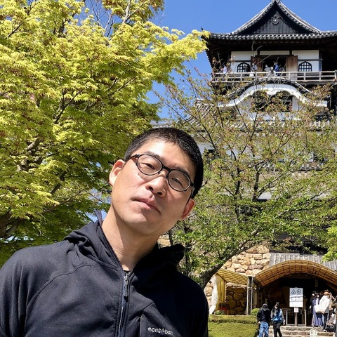
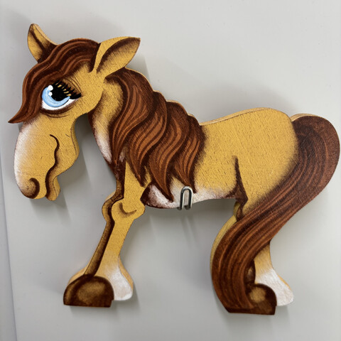

|
Knowledge Representation and Reasoning at Nagoya University 名古屋大学大学院情報学研究科・情報学部 番原・宋 研究室 |
メンバー
|
 |
教授 番原睦則 Mutsunori Banbara 師匠: 角田譲先生と田村直之先生 |

|
准教授 宋剛秀 Takehdie Soh |
|
 |
秘書 加藤弘美 Hiromi Kato |
- 修士
- 髙田 和紀 (Kazuki Takada), 永山 充 (Makoto Nagayama), 杉森 唯瑠未 (Irumi Sugimori), 楊東 (Dong Yang), 溝脇知弘 (Tomohiro Mizowaki), 平澤歩武 (Ayumu Hirasawa), 王驥 (WANG Ji),
- 学部
- 宮下眞樹 (Maki Miyashita), 西森健 (Ken Nishimori), 前田悠士朗 (Yujiro Maeda)
- OB/OG
- 冨田 愛華 (Manaka Tomita), 伊藤 碧己 (Aoi Ito), 加藤 聖人 (Masato Kato), 春田 穂高 (Hotaka Haruta), 小菅 脩司 (Shuji Kosuge), 山田 悠也 (Yuya Yamada), 平手 貴大 (Takahiro Hirate) 竹内 頼人 (Raito Takeuchi), 山田 健太郎 (Kentaro Yamada), 桑原 和也 (Kazuya Kuwahara)
- 就職先
- 株式会社ソニー・ミュージックグループ, 株式会社NTT DATA, 日鉄ソリューションズ中部株式会社, 株式会社アテック, 株式会社NTTドコモ, 株式会社CIS, 株式会社NTTデータMSE, NTTテクノクロス株式会社, 株式会社コアコンセプト・テクノロジー